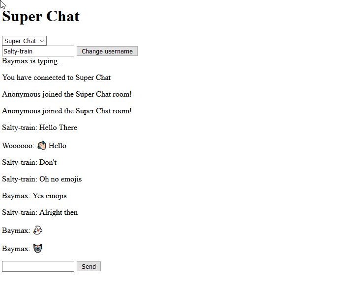

Python Calendar
To see the code for this project, click here to view the repository.
This project was completed during my third year at George Brown college. This was a moderate in difficulty project to complete. This is when NodeJS became one of
my favourite technologies to use. The site uses Socket.IO to implement the chat feature. Chatters are able to change the room they are in by using the drop down
menu. Chatters in rooms only receives messages for those rooms. There are various endpoints built in to see the history chat log and event logs.
To access the app click here.
To access the chat history log, click here.